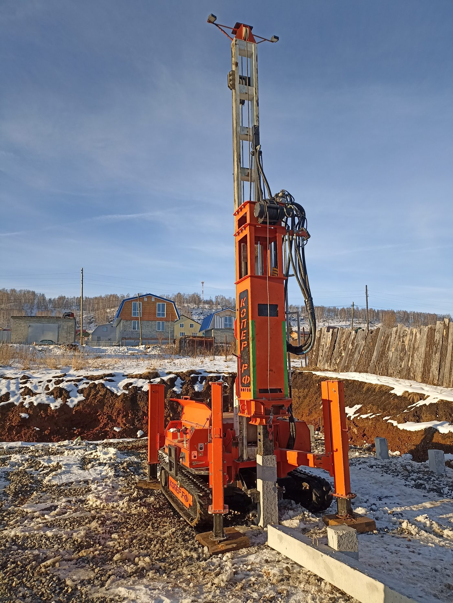
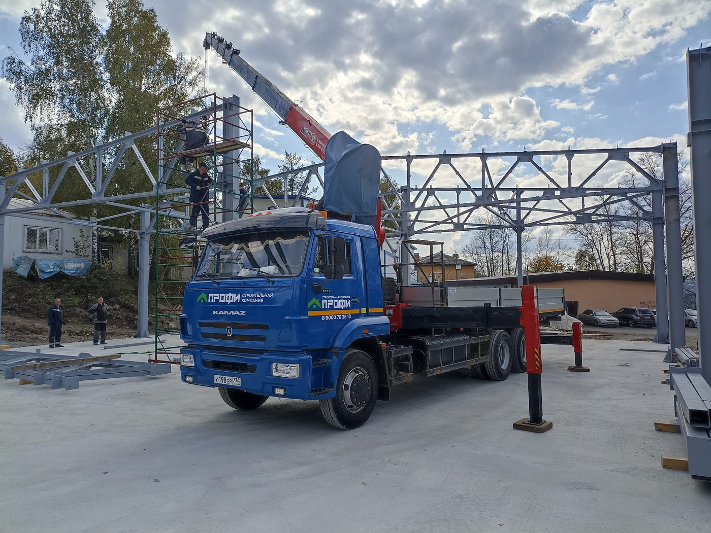
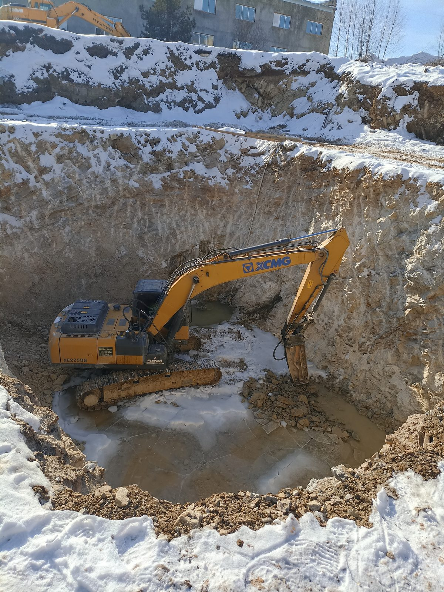
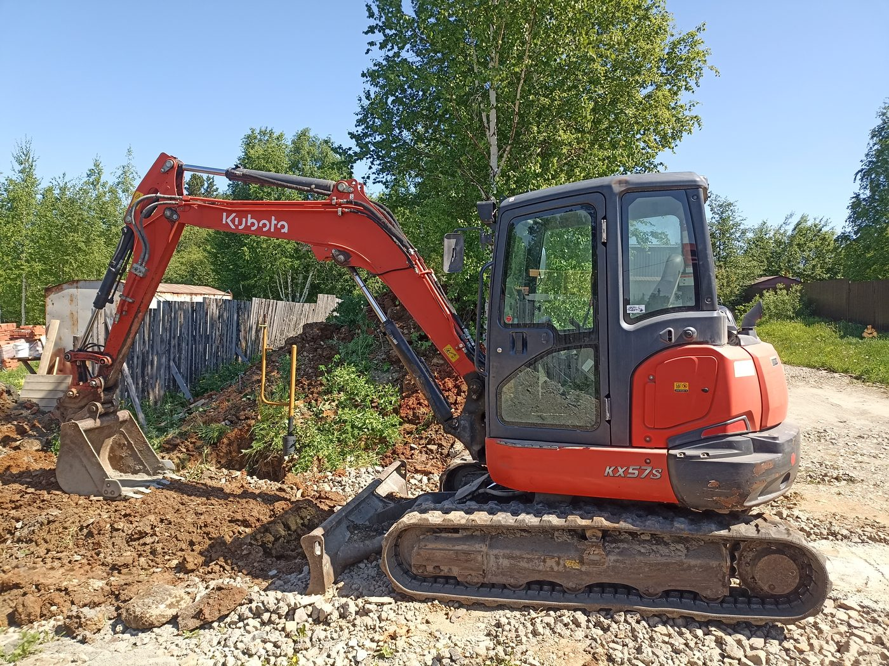
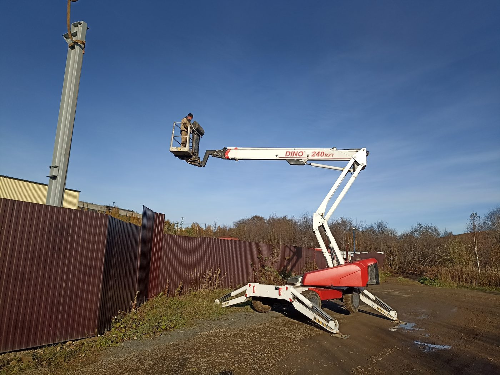

Путь от небольших объектов до промышленных корпусов на крупных предприятиях горнозаводской зоны.
01 · История
Компанию основал выпускник профильного строительного вуза. Первые проекты — небольшие объекты, затем — производственные цеха и склады для крупных предприятий Златоуста и Миасса.
Сегодня «Профи» — это опытный штат, собственные бригады по всем ключевым специализациям и растущий парк техники. Работаем по Челябинской области, опора — горнозаводская зона.

02 · Как мы работаем
Каждая бригада — профильная: каменщики, монтажники, кровельщики, сварщики, монолитчики. Сотрудники регулярно проходят аттестацию и обучение.
Каменное домостроение и монолитные конструкции любой сложности.
Сэндвич-панели, ПВХ-мембраны, металлочерепица, фальц, мягкая кровля.
Изготовление и монтаж металлоконструкций, каркасы зданий.
Регулярное повышение квалификации по специализациям.
03 · Техника
Только подтверждённое фотографиями с объектов оборудование. Своими машинами закрываем фундаментные, земляные работы, монтаж и доставку — без посредников и очередей.

Забивка железобетонных свай для промышленных и гражданских зданий, любой грунт.

Доставка материалов, металлоконструкций и оборудования на объект. Работа манипулятором при монтаже.

Котлованы, траншеи, планировка площадки, разработка грунта в любой сезон.

Земляные работы на плотной застройке: траншеи под коммуникации, планировка, подготовка к фундаменту.

Монтаж сэндвич-панелей, кровельные и фасадные работы на высоте, обслуживание зданий.
Парк техники постоянно обновляется. Характеристики указаны по подтверждённым данным; точные параметры по конкретной машине уточняйте при заказе.
04 · Документы
С 2025 года компания состоит в саморегулируемой организации. Документы предоставляем по запросу.
Свидетельство о допуске к работам. Номер и реквизиты уточняются перед публикацией.
Документы об аттестации и обучении бригад.
Договор подряда с фиксацией сметы и сроков.
Гарантия на выполненные работы по договору.